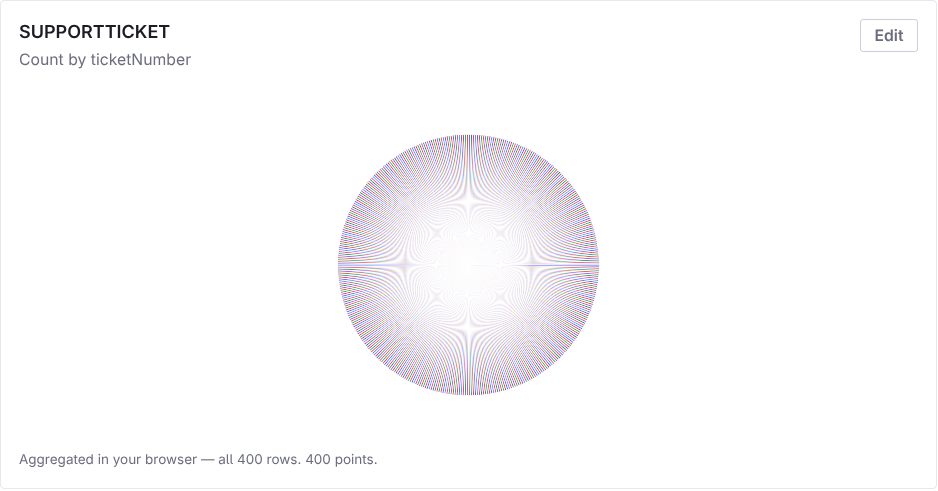
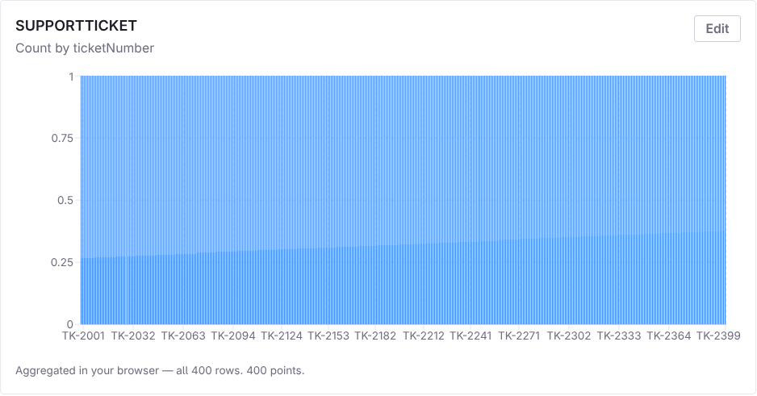
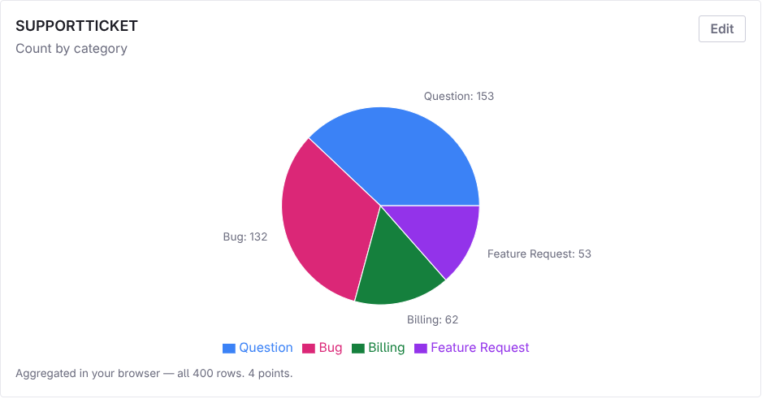

A widget that turns any Object into a chart from config is fast, and that speed has edges. Both columns, then the one edge that's easier to show than to describe.
Support Case, 400 rows, count of records grouped by ticketNumber. Every ticket number is unique, so every group holds exactly one ticket. These are screenshots of the real widget on the demo portal.



category. Question 153, Bug 132, Billing 62, Feature Request 53. Same widget, same data, one dropdown changed.The widget reads the Object's definition and makes every Text field a dimension. From the schema alone, ticketNumber and category are the same kind of field. What tells them apart is the data: how many distinct values there are per row.
| Support Case field | Type | Distinct values | Per 400 rows | As a dimension |
|---|
A date is high-cardinality by day and fine by month. The widget's day/month bucket control exists for exactly this.
Group all 48,048 Sales Orders by orderNumber on rung 3 and the scan still reads 97 pages. The difference is what comes back.
The point of rung 3 is that rows stay on the server and only the answer crosses the wire. Grouping by an ID makes the answer as big as the rows.